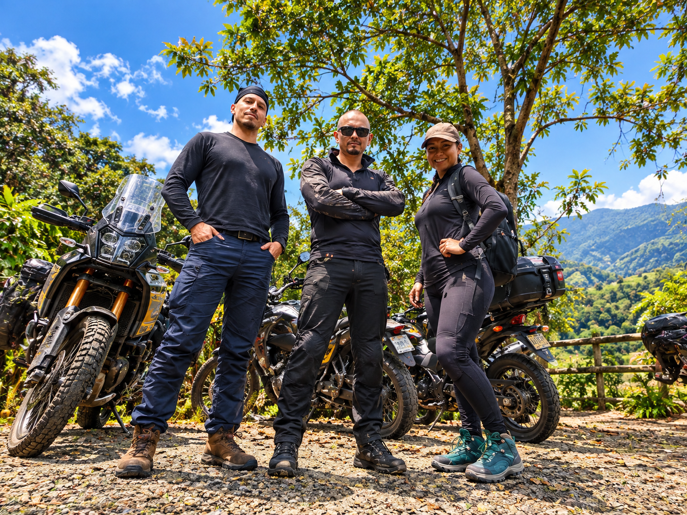
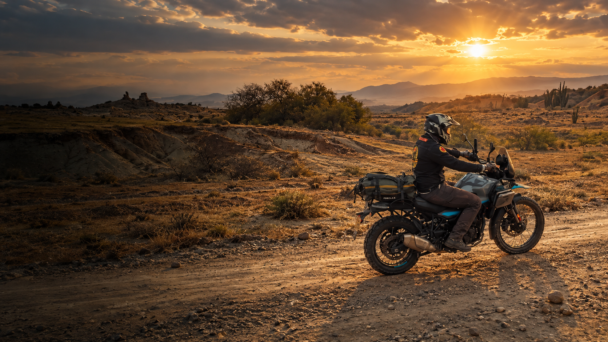
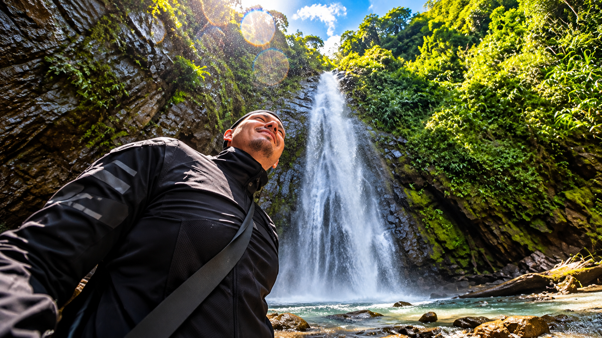
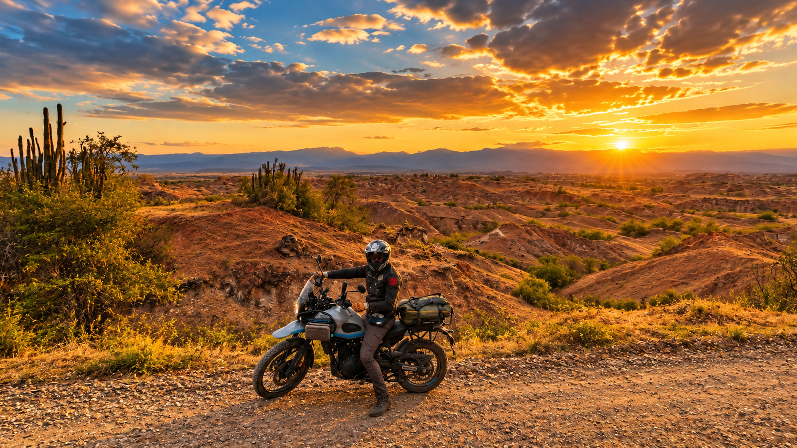

PA' DONDE APUNTE LA MOTO · SIN LIBRETO
MUCHA MOTO.
MUCHO CAMINO.
Y MUCHO CUENTO.
Salimos a rodar, miramos lo que hay y hablamos de ello sin ponerle moño. Motos, precios, rutas, destinos, accesorios y esas pequeñas tragedias nacionales que empiezan con un hueco en la vía y terminan buscando caldo de costilla.
01 / UN MEDIO EN MOVIMIENTO
01 QUIÉNES SOMOS
No somos una postal con casco.
Somos el cuento completo.
PDAM — Pa' Donde Apunte la Moto es un canal independiente que habla de motos, sale a recorrer Colombia y convierte lo que encuentra en historias.
Probamos, comparamos, preguntamos, opinamos y nos metemos por caminos que en el mapa se veían facilitos. Hablamos de precios sin hacerle reverencias a los logos, de destinos sin fingir que todo es perfecto y de la cultura motera como se vive: con emoción, discusiones, barro, tinto y, cuando se puede, una buena arepa.
El tono es cercano, irónico y colombiano. Aquí caben la Himalayan, el hueco de la carretera, la cuenta del taller, el hotel que prometía mucho y hasta el caldo de costilla que termina salvando la mañana. La idea es contar lo que pasa, no posar como catálogo de turismo.

02 NUESTRA COMUNIDAD
La comunidad
no se mide solo en números.
Aquí hay gente que pregunta por las motos, discute precios, recomienda rutas, cuenta sus viajes y sabe dónde se consigue un buen almuerzo después de rodar.
LO QUE SE MUEVE EN YOUTUBE2 AL 6 DE NOVIEMBRE DE 2026
25.364visualizaciones
886 htiempo de reproducción
+178suscriptores netos
Cifras de comunidad: YouTube y Facebook actualizados al 9 de noviembre de 2026; Instagram y TikTok, última cifra registrada el 4 de noviembre de 2026. Rendimiento de YouTube: período del 2 al 6 de noviembre de 2026. Las cifras pueden variar con el tiempo.
03 LO QUE CONTAMOS
De esto sí
hablamos en PDAM.
Una semana podemos estar discutiendo si una moto justifica lo que cuesta; a la otra, preguntando quién tuvo la brillante idea de meterse por esa trocha. También hay destinos, equipo y gente con historias.

01 / KILÓMETROS Y REALIDAD
Rutas sin filtro de postal
Curvas, trochas, paisajes, hospedajes y paradas. Lo bueno, lo malo y lo que no sale en la foto de portada.

02 / DESTINOS
Lugares con cuento
Pueblos, hoteles, restaurantes y rincones que vale la pena conocer. Y también cómo se llega, que eso importa.
03 / VIDA MOTERA
La conversación no se acaba
Personajes, opiniones, anécdotas y debates que empiezan por una cilindrada y pueden terminar hablando del precio del corrientazo.

04 / SIN ARRODILLARSE ANTE EL LOGO
Motos, pruebas y equipo
Comparaciones, precios, accesorios y tecnología. Si algo sirve, se dice; si no convence, también. Para eso se prueba.
04 COLABORACIONES COMERCIALES
DESTINOS · ESTABLECIMIENTOS · MARCAS
¿Tiene un lugar bueno?
Échenos el cuento.
¿Tiene un hotel, restaurante, glamping, parque, taller, destino o rincón que merezca que lo conozcan? Escríbanos. Podemos ir, vivir la experiencia y, si encaja con PDAM, contarla en nuestros propios canales. No llegamos con libreto de elogios ni prometemos convertir todo en maravilla: contamos lo que encontramos, como lo encontramos.
Invitar a PDAM ↗01
Primero, conocer el lugar
Una invitación para vivir la experiencia como cualquier viajero. No hace falta poner alfombra roja: con que nos reciban bien y haya algo interesante que mostrar, empezamos hablando.
02
Que la gente se entere
Podemos incluir ubicación, nombre y una mención natural en un video. Si busca un espacio más destacado o una integración comercial, hablamos de eso antes de grabar.
03
Una mano en la ruta
Acceso, orientación, una noche de estadía o apoyo logístico pueden hacer viable una visita. Cada colaboración se acuerda con claridad, sin compromisos improvisados.
NUESTRO CONTENIDO ES PROPIO. NUESTRA OPINIÓN TAMBIÉN.
Las colaboraciones no compran elogios. No hacemos videos institucionales ni entregamos material audiovisual para las redes de terceros. Grabamos, editamos y publicamos para la comunidad de PDAM.
¿TIENE UN LUGAR QUE MEREZCA UN RATO DE CÁMARA?
Invitar a PDAM por WhatsApp ↗
Échenos el cuento.
05 CONTACTO COMERCIAL
Que no se quede
el cuento en el WhatsApp.
Cuéntenos qué tiene entre manos: un lugar, un destino, una experiencia o una marca. Revisamos la propuesta y, si tiene sentido para PDAM, conversamos. Primero vemos qué hay para contar; después hablamos de la colaboración.
HABLEMOS CON PDAM
WHATSAPP+57 324 592 9902 ↗
CORREOpadondeapuntelamoto@gmail.com ↗
Pa' Donde Apunte la Moto · Colombia